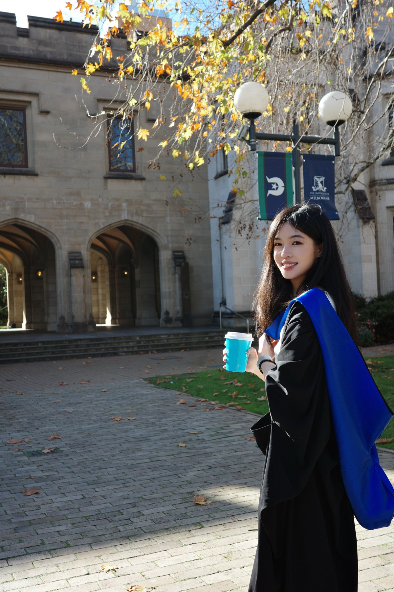

Meet Yihan
Journalism graduate · Content & tech
that's me!

Melbourne graduate · Shanghai basedOpen to work worldwide
HI, I'M YIHAN
Marketing & social content for apps and AI products
I tell stories for apps and AI products through social videos, ads and content campaigns.
I also work in user research — listening to people helps me make better content.
Master’s in International Journalism · University of Melbourne
Journalism graduate · Content & tech

Melbourne graduate · Shanghai basedThe product
My work
Responsibilities
ABOUT ME
I started out in journalism and spent a few years living between China and Australia. Along the way, I discovered my interest in storytelling beyond the newsroom, and these days I mostly work on helping AI tools and apps reach people around the world.
I'm also interested in what goes on behind the scenes, especially product development, strategy, and understanding users.
2024 – 2026
Master of International Journalism
Melbourne, Australia2025
Exchange programme
Beijing, China2019 – 2023
Bachelor of Journalism
Nanchang, ChinaCapCut · Premiere · Canva
Photoshop · Procreate
TikTok · Instagram · Meta · Reddit
CONTACT
I’m open to content, growth and user research roles, especially with teams building AI products and apps
yihan.h.chen@gmail.comShanghai based · Open to opportunities worldwide
Storytelling, campaigns and product content
TikTok, Instagram and international audiences
Paid ad creative, testing and iteration
Recruitment, interviews and qualitative insights